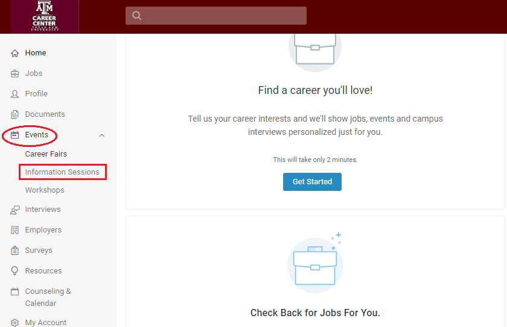
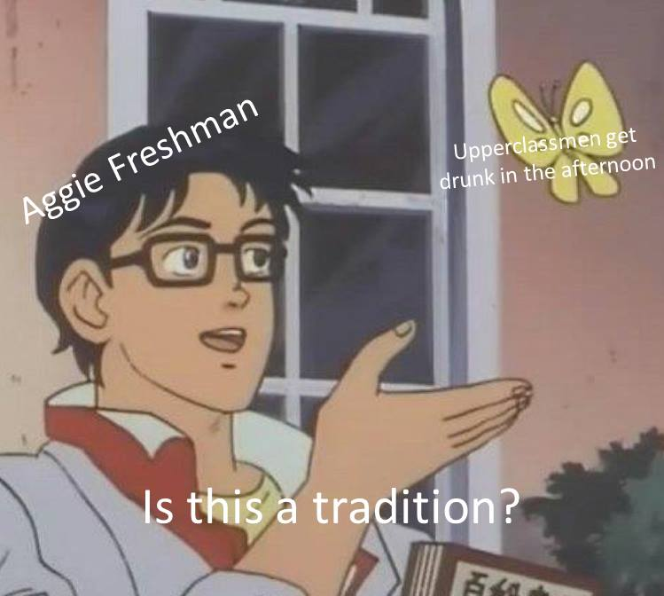

Guide to Eating Out on a budget in Bryan / College Station
Howdy!
Those who know me, probably know that I run this small WhatsApp group (approx. 200 members) where I and other members share events or offers for free food on or near campus.
As poor college students, eating out can be a strain on the budget. At the same time, finding a good deal is a bit of work, usually not worth the effort. So in the last 2 years, I did all the work for you and compiled a list of offers, events and methods to get your grub on without hurting your wallet.
Disclaimer: Some of the links below mention my referral code. I would get some referral credit if you use it. You may choose to not use it if you wish.
Restaurant Offers
- McDonald’s - Never pay for fries when you order with this app. Download the McDonald’s App
- IHOP - Free pancakes on birthday and day of signing up every year. MyHop
- Grub Burger - Grub Burger Bar’s loyalty program, Grublove offers free cheese fries on sign-up. The free item may change. When I signed up, they offered a free burger. Sign up for Grublove
Churches
If you’re not religious or are uncomfortable going to church for whatever reason, you can skip this section but the food is quite food.
- Aggie BSM - The Baptist Student Ministry has a free lunch every Wednesday and a lunch for $2 every Friday at 12:30 pm.
- A&M United Methodist Church - Every Wednesday at 5.30 pm they host a dinner which is free for students. Check the A&M United Methodist Church facebook page for details.
HireAggies
This might sound like a surprising inclusion but a lot of companies come to campus all year round to hire students. Usually companies have food at these events. Check out the ‘Information Sessions’ section under the ‘Events’ section on HireAggies for details. If you attend enough of these, maybe you’ll even get a job and won’t be a poor student any more 😛

Apps
These are independent websites, not affiliated to any restaurant. I’ve tried several apps but these are the ones that consistently offer good deals.
- Hooked - Hooked is a great app that has deals on almost all local restaurants. I’ve got free sandwiches from BBQ 13-0 and Wayback Burgers, a free pizza from Blaze too. Download Hooked
- UberEats - I’ve found this the only delivery app that “works” in College Station. It has regular offers they send via email. You can get $5 off your first order on UberEats with my code: eats-dwarkanathp2ue. Download UberEats
- Tastebud - This is a neat app that has daily discounts on local restaurants ranging from 10% to 50%. Download the app, add your card which you will use to make a purchase, then “lock-in” an offer on the app before visiting a restaurant to get the discount. Use my promo code “DPRAB” for $5.00 off your first purchase. Download Tastebud.
- T-Mobile Tuesdays - If you use T-Mobile, the T-Mobile Tuesdays app offers free stuff on tuesdays - I’ve got a free subway sandwich, t-shirt, discounts on movie tickets. Download T-Mobile Tuesdays
Drinks
Get drunk in under $10 any day of the week in a bar
- Applebee’s - $1 margaritas all year, $1 bud light / PBR some times. Check their facebook page
- Aggazine - The Aggazine releases a list of offers every month for specials at Northgate bars. My favorite offers ordered by day:
| Day of the Week | Bar | Offer |
|---|---|---|
| Monday | Backyard | $2 Wells |
| Tuesday | Backyard | $1 Wells |
| Wednesday | Foundation | $1 Wells |
| Thursday | Paddock LaneShiner Park | $1 Wells$1 Wells |
| Friday | Paddock Lane | $8 Fish Bowl |
| Saturday | ||
| Sunday | O’Bannon’s | $2 Wells |

A meme I made some time back
This is in no way an encouragement to get drunk every day. If you do, don’t forget to tip your bartenders! 😄
Other Resources
- /r/freebies - for food and other offers. This is a hit-and-miss. Sometimes there are great deals at chain restaurants but not all of them might be available in College Station.
- Free Food Guy - Subscribe to his newsletter for new offers. That’s how I found out about the Pizza Hut and Subway offers
- 12thCan - If you’re really on a budget and need groceries, the 12th Can Food Pantry is open twice a month. They usally have canned food that you can simply heat up.
Closing Comments
I wouldn’t advise that you eat out fast food everyday. This guide is only meant to help you save money on eating out, not as a meal plan! Obviously, this assumes you have no dietary restrictions. If you do, please check with the restaurant before visiting.
One important thing I’d like to mention is that if you do attend an event that serves free food, don’t just take the food and leave. Please stay till the end of the event. Organizations offer food to attract students to their events. Be a good Ag.
Thanks and Gig ‘Em.

Hi, I’m Dwarkanath Prabhu! I’m a software engineer, currently working at Amazon.
I like reading and writing about programming, startups, soccer (Arsenal FC) and politics.